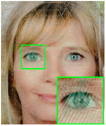
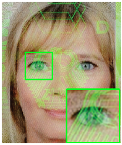

Abstract
We introduce a method to repair an image which has been stamped by an identigram or a watermark. Our method is based on the cross-channel correlation which assures the co-occurrence of image discontinuities and correlation of color distributions across different color channels of an image. Using blind source separation, we find the transformation of color space which separates the structures of identigram and that of the original image into two different individual color channels. To repair the image contents in the corrupted channel, we formulate the problem using the Bayes’ rule where the prior and the likelihood probabilities are defined based on the cross-channel correlation assumption. We compare our results with results from inpainting and texture synthesis-based hole filling techniques on various examples. Our results are pleasable for real-world examples and have the maximum PSNR for synthetic examples.
Publication(s)
Identigram/Watermark removal using cross-channel correlation
Jaesik Park, Yu-Wing Tai, and In-So Kweon
CVPR, 2012